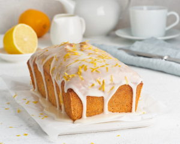

This Moist Lemon Cake Recipe is fluffy, tangy and so easy to make!
If you like lemon loaf then you’ll love this delicious, moist lemon cake recipe that’s made completely from scratch in less than 10 minutes. It’s made with freshly grated lemon zest and fresh lemon juice, everyone loves it! It’s gone in minutes whenever I make it!
Ingredients
For the lemon cake:
- 1 ½ cup all-purpose flour
- 1 ½ tsp baking powder
- 1 Tbsp lemon zest
- ½ salt
- ½ cup unsalted butter
- 1 cup granulated sugar
- 2 large eggs
- 1 tsp vanilla extract
- 2 Tbsp lemon juice
- ½ cup buttermilk
For the icing:
- 1 cup powered sugar
- 1 ½ Tbsp lemon juice
- 1 Tbsp milk
Steps
- Preheat oven to 350°F (177°C). Grease a 9x5-inch (or 8x4-inch) loaf pan.
- In a medium bowl combine the flour, baking powder, lemon zest, and salt. Set aside.
- In the bowl of a stand mixer fitted with the paddle attachment (or using an electric mixer), cream the butter and sugar together at medium-high speed until pale and fluffy, about 4-6 minutes. Scrape the sides of the bowl as needed.
- With the mixer running on low-speed, add the eggs one at a time, then beat in the vanilla extract and lemon juice. Beat on medium-high speed until combined.
- With the mixer on low, add about one-third of the flour mixture and mix until almost combined, then add half the buttermilk and mix until just combined. Repeat with another third of flour mixture and then the last half of the buttermilk, ending with the last third of the flour. Beat until just incorporated.
- Scrape the batter into the prepared loaf pan and bake for 45-55 minutes until the cake is golden brown and a toothpick comes out mostly clean with only a couple moist crumbs. Baking times vary, Let the cake cool for about 15 minutes in the pan, allow cake to cool completely.
- When the cake is cooled, combine all the icing ingredients, start with 1 tbsp lemon juice and milk and add the remaining lemon juice as needed. The icing should be thick and not runny. Pour icing over cake and let dry before serving.